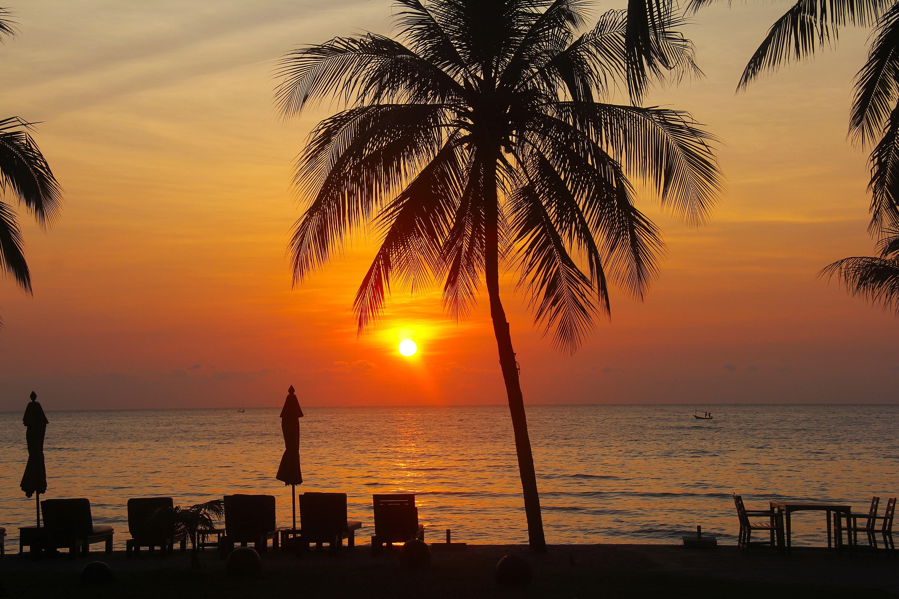

Les Maldives
Quoi de mieux pour passer du bon temps et décompresser qu’une destination
paradisiaque au beau milieu de l’océan indien. Alors les maldives sont faites pour vous, une maison sur
piloties
sur une mer transparentes, vous pourrez vous jeter du ponton des le reveil pour pouvoir aller plonger
avec toutes
sortes de poissons et même espérer voir des tortues, des raies ou même nager avec des requins pour finir
la journées
à la piscine avec un cocktail devant un magnifique coup de soleil.
Les Emirats Arabes Unis
Comment aller aux Emirats Arabes Unis sans visiter la fameuse ville
de Dubaï. Cette ville est une ville pleine de démesure dans laquelle vous découvrirez des immeubles si
grands que
le nom de grattes-ciel prendra tout son sens puisque vous finirez par avoir un torticolis à force de
chercher
leurs sommets. Il est impossible de visiter cette ville sans faire un tour dans son immense mall et de
ne pas
monter dans le burj khalifa pour pouvoir avoir une vue vertigineuse de la ville. Vous pourrez bien
évidemment
admirez le luxe en vous baladant dans les rues et en passant devant des énormes villas et en croisant
des voitures
de sport dont vous n’aurez même pas imaginé l'existence. Il est bien entendu obligatoire d’aller faire
un tour
de 4x4 et de quad dans le désert afin de découvrir toutes les traditions de ce pays.
La Chine
La chine est un pays extrêmement pauvre, vous pourrez visiter des paysage totalement
différents même au sain d’une même ville entre les centre d'affaires avec des grands building et autour
des petites
rues avec un atmosphère totalement opposé mais tout aussi impressionnant à voir. Vous pourrez également
vous
aventurez dans les campagnes de pékin pour faire un détour obligatoire par la grande muraille de chine,
un
monument gigantesque qui fait partie des 7 merveilles du monde. Dans ces campagnes vous pourrez admirer
des
agriculteurs cultivant le riz avec un mode de vie très primaires qui remettra en question votre point de
vue
de la vie.

philipine/ malaisie/ thailand
Ces trois pays sont assez similaires puisqu’ils sont voisins
et donc dans la même archipelle. Ces trois pays sont des pays paradisiaques dans lesquels vous verrez
des paysages
comme jamais vous en avez vus avec de formidables couchers de soleil. Des pays parfait pour apprendre la
plongé
sous-marine car vous pourrez y admirer certains des plus beaux fonds marins de la planète et accessible
très
facilement puisqu’il suffit de se jeter dans l’eau depuis n’importe quelle plage pour vous en prendre
pleins la vue.


.jpg)

.jpg)

.jpg)